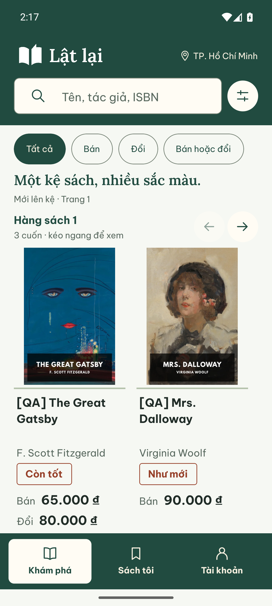
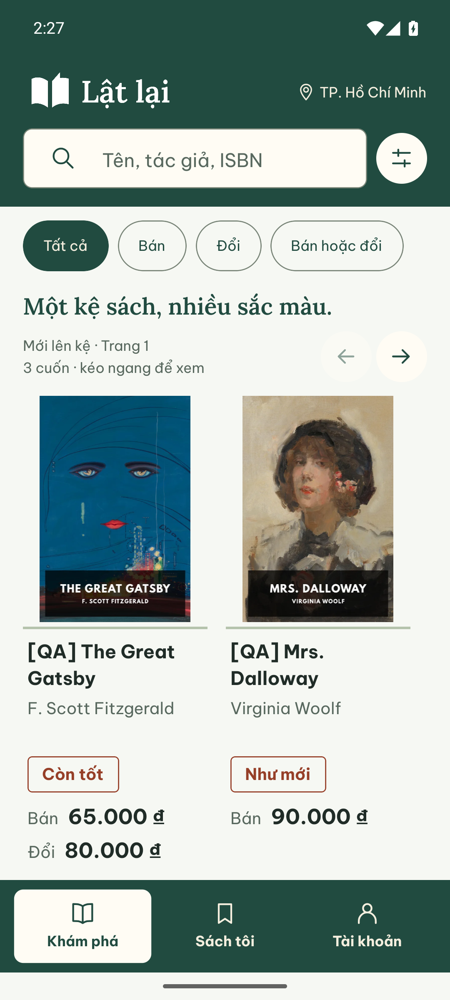
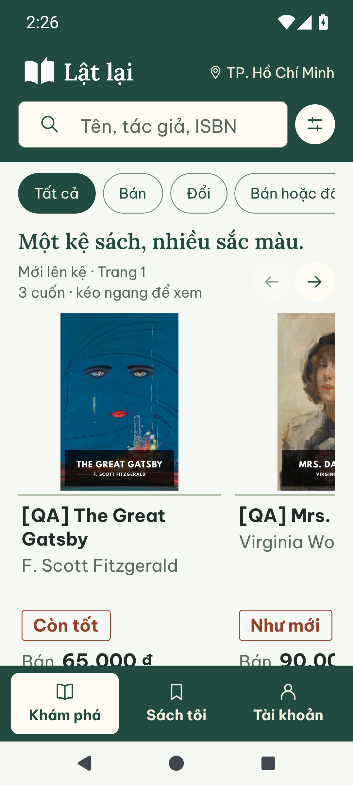
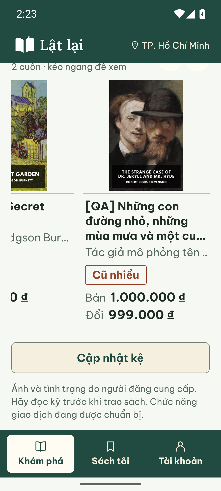

Khám phá — nhịp bố cục rõ hơn
Gộp sắp xếp/trang với điều khiển hàng đầu; tên và tác giả đi liền thành một cụm. Dấu tình trạng và giá tiếp tục thẳng hàng, khoảng cách giữa các hàng sách giảm từ32 xuống24dp.
Ảnh Android thật, Pixel7/API35, viewport khoảng390dp. Dữ liệu QA mô phỏng, bìa tư liệu; API/Mongo thật trong môi trường riêng, storageFAKE. Không thay API, hành vi tìm/lọc, thứ tự sách hay màn chi tiết.
100% — điều hướng cử chỉ
Trước · 0ec35c1
Sau · bản sửa chờ duyệt
130% — ba nút Android
Trước · source92034c1, giao diện như0ec35c1 Sau · không chồng lên vùng nút hệ thống
Sau · không chồng lên vùng nút hệ thống
Chữ130% cần cuộn để đọc đủ giá. Tên dài tối đa ba dòng; tên đầy đủ ở chi tiết và nhãn accessibility. Khoảng đệm sau tác giả của cuốn tên ngắn dùng để căn dấu/giá với cuốn dài nhất cùng hàng, không phải lỗi mất nội dung.
Tên dài, “Cũ nhiều” và hai giá ở cuối kệ
130% · cuộn cuối kệ, QA một triệu đồng
Ảnh kiểm nội dung này chụp trước thay đổi cuối cùng32→24dp giữa hai hàng; viewport cuối không hiển thị khoảng cách đó. Hai cặp trước/sau bên trên dùng source cuối.
Kiểm tra và giới hạn · 02/10/2026
RN96/96tests, lint/typecheckPASS; Expo web export12routesPASS (warningNO_COLOR và forced exit0). Android đã chạm qua các cuốn, cuộn hàng cuối; giá lớn/tên dài/ba nút130% đã xem. Web390px đã đo dấu và giá cùng hàng thẳng nhau; tìmGatsby chỉ một cuốn thu gọn cụm tên+tác giả còn71px, không giữ dòng thứ ba thừa.
Sau ngắt phiên, QA Mongo báoSANDBOX_LOST (thiếu các identity của sandbox đã khởi tạo). Không reset hoặc provision lại trên cấu hình cũ; ảnh ở đây được chụp trước gián đoạn. Chưa hoàn tất vòng kiểm lại trạng thái rỗng/lỗi/keyboard/Back cho gói này. TalkBack, ARM, iOS và review người thật vẫn mở. Lỗi tương phản nút hệ thốngOSdark/API35 từ gói navbar vẫn mở, không liên quan thay đổi giãn cách.
Nhánhcodex/ui-shelf-spacing, base0ec35c1; checkpoint fix(rn): refine discovery spacing and book metadata alignment. Chưa push/merge. Xem DESIGN và điểm lưu.